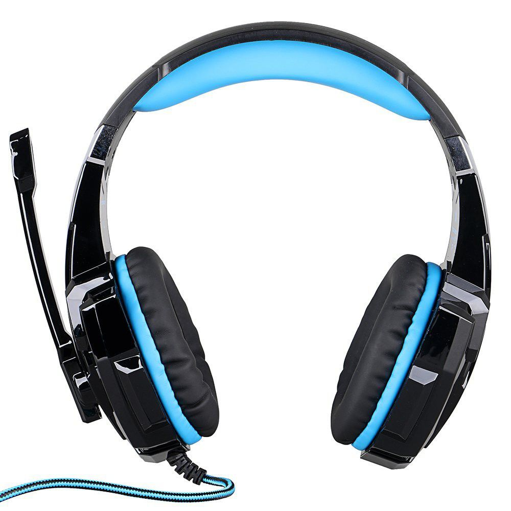
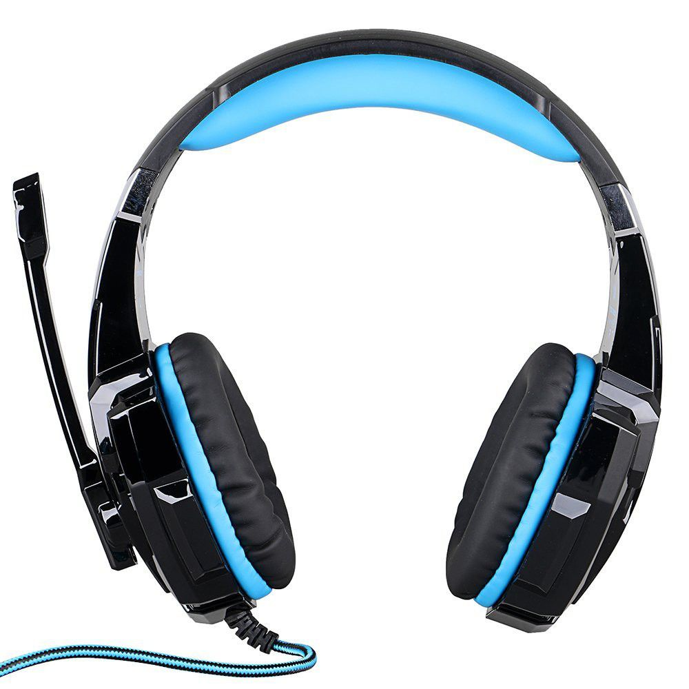
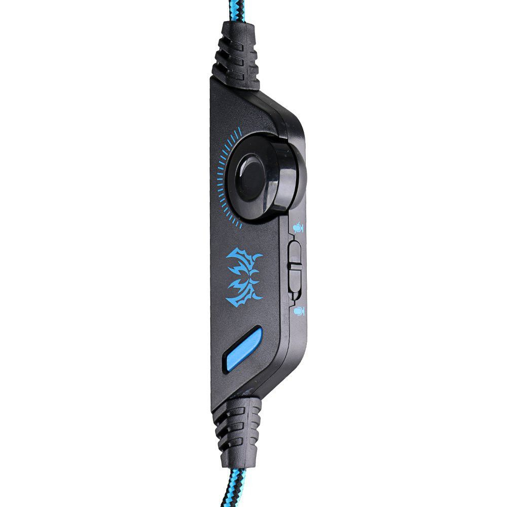
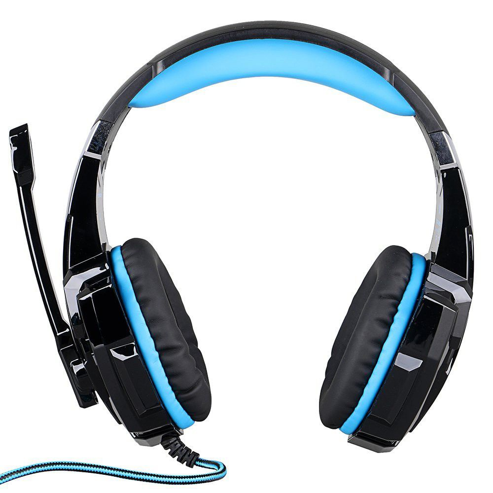
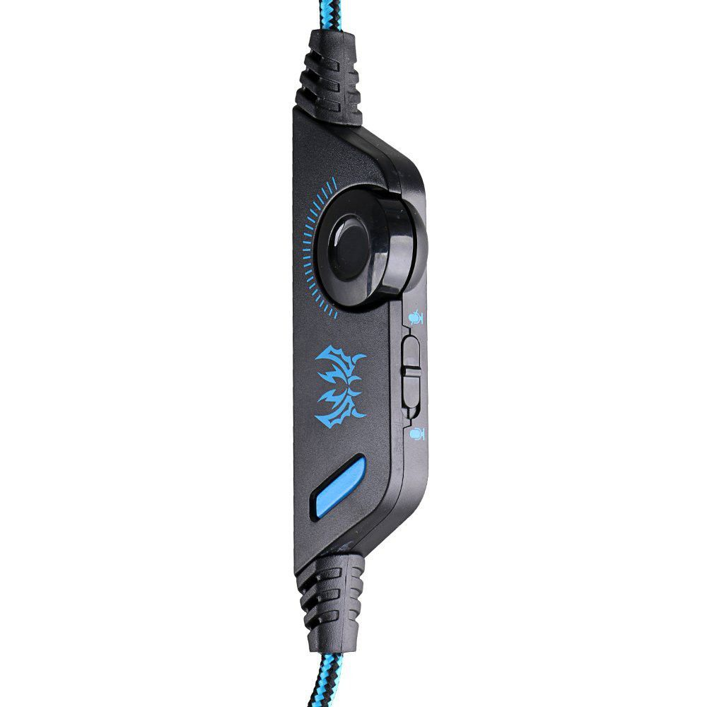
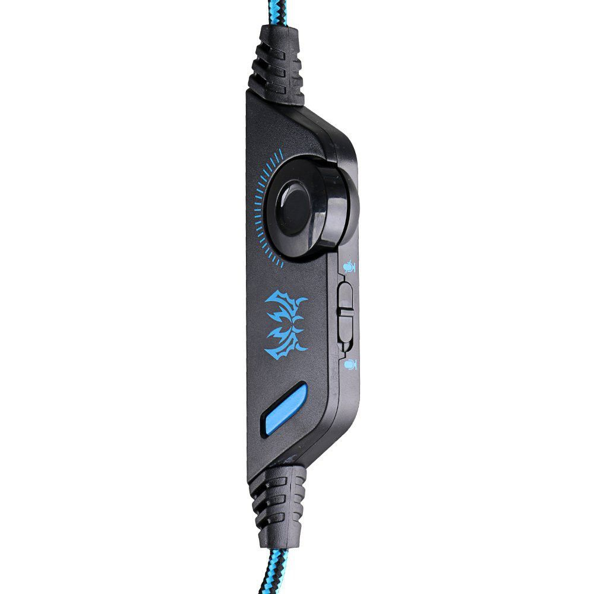
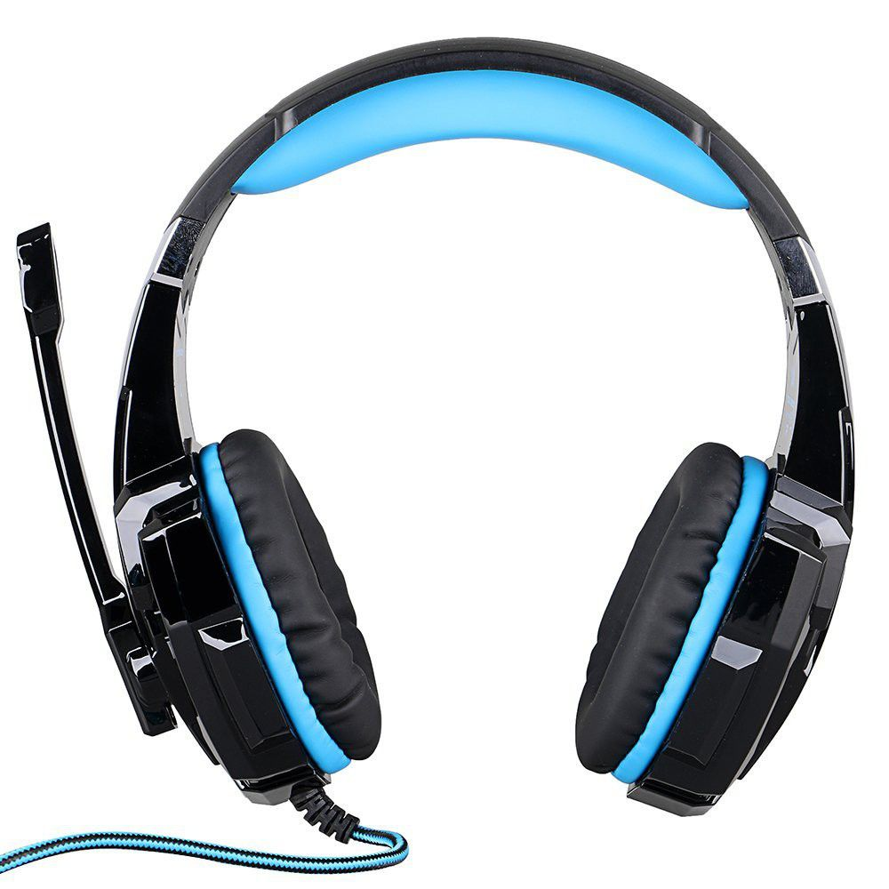
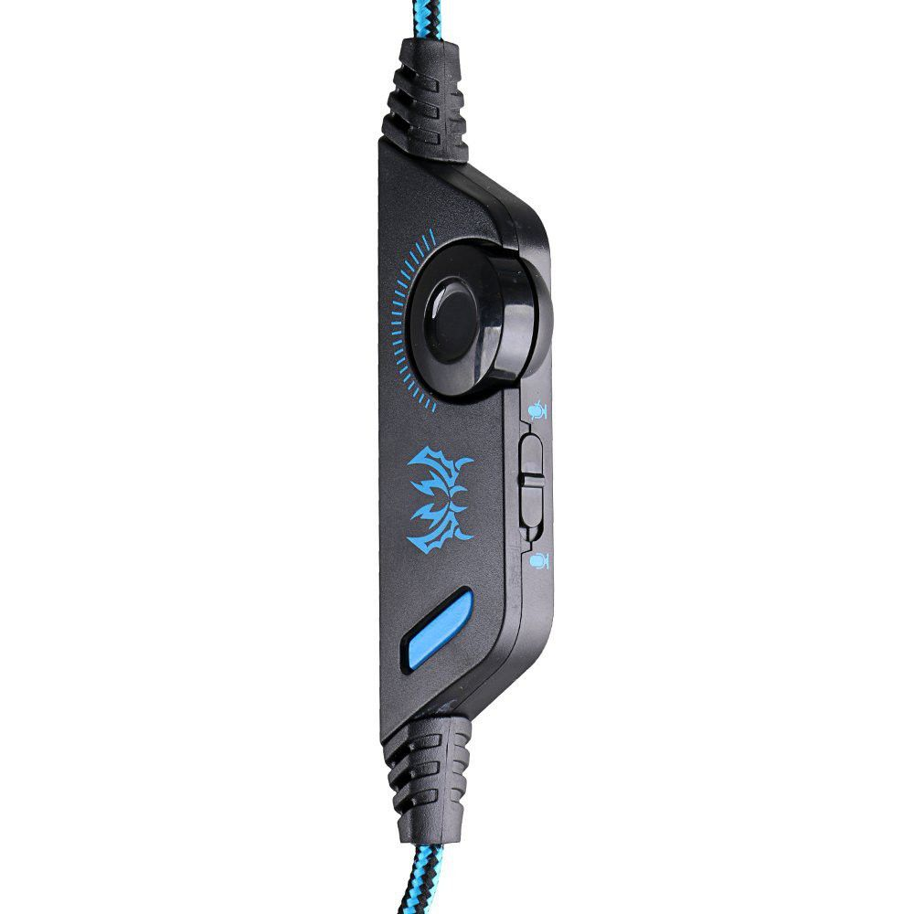

 





Brand Name |
Serial Number |
Price |
Stock Availability |
|---|---|---|---|
KOTION |
MPTAL00202363 |
R 400.00 |
Only 30 items in Stock |
This KOTION EACH G9000 is a primary kind of gaming headset, which brings you vivid sound field, sound clarity, sound shock feeling, capable of various games. Its super soft Over-ear pads is more comfortable for long time wear, and it is a great headphone for game player.High precision 40mm driver, bring you vivid sound field, sound clarity, sound shock feeling, capable of various games.Splendid ambient noise isolation.3.5mm connector, it is suitable for iPhone 6 / 6 Plus, Samsung S5, S4, LG, Xiaomi, iPad, PC, laptop, tablet, etc. Earmuffs used with skin-friendly leather material, and super soft Over-ear pads that is more comfortable for long time wear. Glaring LED lights are designed on the earcups, highlighting the atmosphere of the game. Braided wire, durable tensile effectively reduce the external resistance; Velcro cable tie, prevent the line twining. Line is equipped with a rotary volume controller, one key Mic mute, more convenient to use. Exquisite craftsmanship and fashion appearance.Professional gaming headset for your choice.